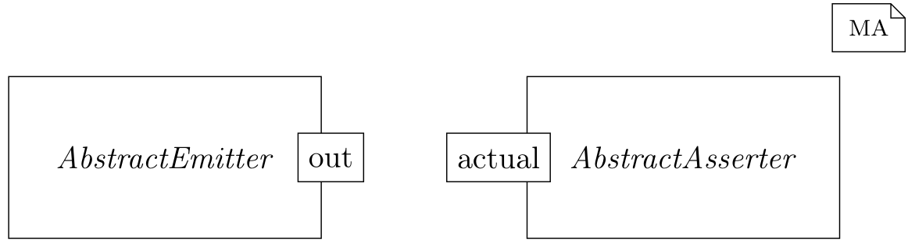

Writing Automated Tests
An important approach to ensuring system quality is systematic testing. Testing is the act of detecting failures in a product. A failure is a divergence between the expected and actual behavior of software. MontiArc includes support for writing automated tests. These can be run whenever changes are made to ensure that the systems behaves as specified.
How to Write Tests
In MontiArc, tests are components that verify the behavior of other components. This is achieved by making assertions over the input and output streams of the system to be tested, also called system under test (SUT).
A test component is usually decomposed and consists of three major parts, namely the test fixture, the SUT, and the test oracle. The test fixture (also called the test context) provides inputs to the SUT. The SUT produces outputs based on the provided inputs, which are then evaluated and compared against the expected results by a test oracle.
Test Anatomy
A test in MontiArc is identified by the <<test>> stereotype in front of the
component definition. Take a look at the following example:
<<test>>
component AndTest {
And sut;
emitterA.out -> sut.a;
emitterB.out -> sut.b;
sut.q -> assertEquals.actual;
AssertEquals<boolean> assertEquals(true);
Emit<boolean> emitterA(true);
Emit<boolean> emitterB(true);
}
The component sut implements the logic of a binary AND gate and is the SUT.
The emitterA and emitterB are the test fixture, they provide input to the
SUT. Here they emit a single message with value true, wich is configured via
their argument.
The assertEquals component then checks the output against the expected output.
The example makes use of two library components called Emit and
AssertEquals,
which are responsible for the setup and assertions respectively.
Parameterized Tests
MontiArc allows the definition of parameterized tests. This is useful when wanting to define multiple tests while keeping the overall architecture the same. A test component can have parameters for which different values can be provided, each of which results in an individual test execution. The values are provided as a list assigned to a stereo value with the same name as the parameter.
The following example shows a parameterized test component, which creates N
different test cases. For convenience, if a parameter stays the same over all
tests than the list can be omitted and a direct value can be assigned.
<<test, p1=[val1, val2, ..., valN], p2=valP2>>
component AndTest(T p1, T p2) { }
| Test index | Instantiation |
|---|---|
| 0 | AndTest(val1, valP2) |
| 1 | AndTest(val2, valP2) |
| ... | |
| N-1 | AndTest(valN, valP2) |
Complex Tests
More complex tests can be defined by using other library components that
produce or assert streams of messages.
The execution length of the test can be set with the ticks stereotype, which
defines the number of ticks that the test should run for.
The following test description targets an implementation of the binary AND gate. The test is parameterized by the input and output streams of the SUT.
import java.util.List;
import montiarc.maunit.api.AssertEqualsTimed;
import montiarc.maunit.api.EmitTimed;
<<test,
ticks=3,
a=[
[[false, false], [true], [true]],
[[false, false], [false], [false, true]]
],
b=[
[[false, true], [false], [true]],
[[false, true], [false], [true, true]]
],
expected=[
[[false], [false], [true]],
[[false], [false], [true]]
]>>
component AndTest(List<List<Boolean>> a,
List<List<Boolean>> b,
List<List<Boolean>> expected) {
And sut;
emitterA.out -> sut.a;
emitterB.out -> sut.b;
sut.q -> assertEquals.actual;
AssertEqualsTimed<Boolean> assertEquals(expected);
EmitTimed<Boolean> emitterA(a);
EmitTimed<Boolean> emitterB(b);
}
import java.util.List;
import montiarc.maunit.api.AssertEqualsSync;
import montiarc.maunit.api.EmitSync;
<<test,
ticks=[4, 5],
a=[
[false, false, true, true],
[false, false, false, false, true]
],
b=[
[false, true, false, true],
[false, true, false, true, true]
],
expected=[
[false, false, false, true],
[false, false, false, false, true]
]>>
component AndTest(List<Boolean> a,
List<Boolean> b,
List<Boolean> expected) {
And sut;
emitterA.out -> sut.a;
emitterB.out -> sut.b;
sut.q -> assertEquals.actual;
AssertEqualsSync<Boolean> assertEquals(expected);
EmitSync<Boolean> emitterA(a);
EmitSync<Boolean> emitterB(b);
}
Resulting in the following test cases:
| Test index | #Ticks | Input a |
Input b |
Expected output q |
|---|---|---|---|---|
| 0 | 3 | 〈false, false, Tick, true, Tick, true, Tick〉 |
〈false, true, Tick, false, Tick, true, Tick〉 |
〈false, Tick, false, Tick, true, Tick〉 |
| 1 | 3 | 〈false, false, Tick, false, Tick, false, true, Tick〉 |
〈false, true, Tick, false, Tick, true, true, Tick〉 |
〈false, Tick, false, Tick, true, Tick〉 |
| Test index | #Ticks | Input a |
Input b |
Expected output q |
|---|---|---|---|---|
| 0 | 4 | 〈false, Tick, false, Tick, true, Tick, true, Tick〉 |
〈false, Tick, true, Tick, false, Tick, true, Tick〉 |
〈false, Tick, false, Tick, false, Tick, true, Tick〉 |
| 1 | 5 | 〈false, Tick, false, Tick, false, Tick, false, Tick, true, Tick〉 |
〈false, Tick, true, Tick, false, Tick, true, Tick, true, Tick〉 |
〈false, Tick, false, Tick, false, Tick, false, Tick, true, Tick〉 |
Library Components
The library consists of two main component categories: assertion components and emitter
components. The former provide means to compare input streams with expected values,
the latter for generating streams of messages. All assertion components share that they
have a single incoming port called actual, while all emitter components have one
outgoing port called out. All components lie in the montiarc.maunit.api package.

Asserter
AssertTrue:The most simple assertion component. It has a single boolean input port calledactualand asserts that all incoming messages are true. I.e., the input stream has to be of the form〈true, true, true, ...〉. If not, it throws an assertion error.AssertFalseHas a single boolean input port calledactuallike the AssertTrue component, but expects the incoming messages on the portactualto be false.AssertEquals<T>(T expected)A component that can make assertions over objects. The expected value is specified by the parameterexpected. This is a generic component with a single input port T actual that asserts all incoming messages are equal to that parameter expected.AssertEqualsSync<T>(List<T> expected)A component with a single input port, of type T calledactual, that asserts the stream of incoming messages is equal to expected interpreted as a synchronous stream. It also fails the test if more messages are received than what was expected.AssertEqualsUntimed<T>(List<T> expected)A component with a single input port, of type T called actual, that asserts the stream of incoming messages is equal to expected while ignoring ticks in the stream. It fails the test if more messages are received than what was expected.AssertEqualsTimed<T>(List<List<T>> expected)Like theAssertEqualsUntimed, this is a component with a single input port T actual. But, instead of ignoring ticks, the expected values are grouped by ticks, and after every tick, the next sublist is expected. If more messages arrive in one tick than are declared in the corresponding sublist the test fails. Likewise, if fewer messages arrive than were expected, the test also fails. All received messages have to be equal to the expected messages. For example, a list of[[x, y], [z]]would be interpreted as an expected stream of〈x, y, Tick, z, Tick〉.
Emitter
Emit<T>(T output)This component will emit a single message of type T with the value of output on the sync port out every tick. Resulting in an infinite output stream of the form〈output, Tick, output, Tick, output, Tick, ...〉. It can be used to generate a mock message every tick to drive a test for sync or timed components.EmitList<T>(List<T> output)A timed variant of the Emit component. Instead of a single message, all elementseiof output are emitted in one time slice. The resulting output is an infinite stream of the form〈e1 , e2 , ..., en , Tick, e1 , e2 , ..., en , Tick, ...〉.EmitSync<T>(List<T> output)A component that will send the elements of output on the sync port out with a tick after each. After all elements have been sent, the output stream is repeated. Consequently, it gives an infinite output stream of the form〈e1 , Tick, e2 , Tick, ..., en , Tick, e1 , ...〉.EmitTimed<T>(List<List<T>> output)Similarly toEmitSync, this component will emit messages on port out. The messages are timed, the sublists are grouped by ticks, and all elements are sent out as individual messages. Likewise, after all elements have been sent, the output stream is repeated. Resulting in a stream of the form〈e11 , e12 , ..., e1k , Tick, ..., enm , Tick, e11 Tick, ...〉. Of all emit components, this gives the most control over how and when messages are sent.
Controlling How Tests Are Run
If the MontiArc Gradle plugin is used, tests are automatically run during the
test task. The task only considers components located in the test source
directory that have the <<test>> stereotype. The test task can be run
specifically by executing gradle test.
Individual tests can also be run with the gradle test -tests SomeTestComp
command, where SomeTest is the name of the test component.